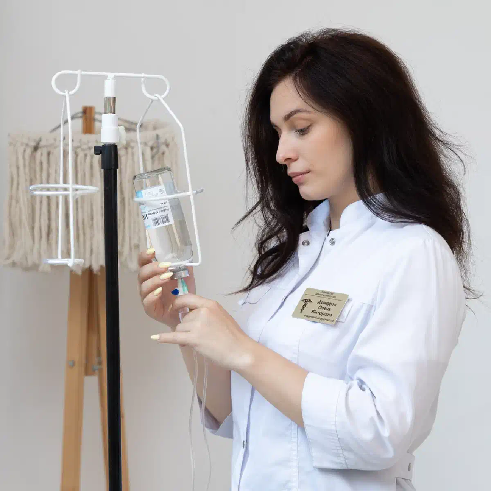

+38(068)
79 72 782
+38(068)
79 72 782Лечение зависимости от мефедрона в Харькове
Анонимно под контролем нарколога


Бесплатная консультация, работаем круглосуточно 24/7
Анонимно под контролем нарколога

Дата написания: 19 сент. 2026 г.
Последнее обновление: 19 сент. 2026 г.
Мефедрон относится к синтетическим психостимуляторам. Его употребление может сопровождаться выраженным возбуждением, бессонницей, тревогой, учащённым сердцебиением, повышением артериального давления и сильным желанием повторить приём вещества. При регулярном употреблении постепенно формируется зависимость, человеку становится всё сложнее контролировать количество вещества и самостоятельно прекращать его употребление. Лечение зависимости от мефедрона в Харькове обычно включает несколько этапов: медицинскую оценку состояния, помощь при интоксикации или последствиях употребления, работу с психической зависимостью, психотерапию и профилактику повторных эпизодов. Формат лечения определяется индивидуально. Одним пациентам достаточно амбулаторного наблюдения, другим требуется наркологический стационар и более продолжительная реабилитационная программа.
Лечение следует рассматривать, если употребление мефедрона перестаёт быть эпизодическим и начинает влиять на поведение, здоровье, отношения, работу или учёбу человека. Тревожным признаком является ситуация, когда человек регулярно возвращается к веществу, несмотря на понимание негативных последствий. Может появляться сильная тяга, потеря контроля над количеством употребляемого вещества и невозможность остановиться после начала употребления. Обращение за помощью особенно важно, если после мефедрона возникают многодневная бессонница, выраженная тревога, раздражительность, панические состояния, снижение настроения или проблемы с сердечно-сосудистой системой. Чем раньше начинается лечение наркотической зависимости, тем легче выстроить дальнейшую программу восстановления.
Мефедрон воздействует на системы мозга, связанные с вознаграждением и мотивацией. После употребления человек может испытывать выраженный подъём настроения, прилив энергии, повышение активности и общительности. Со временем мозг адаптируется к повторяющемуся воздействию вещества. Обычные занятия могут приносить меньше удовольствия, а желание снова употребить наркотик становится всё более выраженным. Постепенно формируется психологическая привязанность к веществу. Человек начинает связывать мефедрон с отдыхом, общением, сексуальной активностью, снятием стресса или способом уйти от неприятных эмоций. При регулярном употреблении эпизоды могут становиться более продолжительными, а периоды между ними — короче. В результате может потребоваться комплексное лечение наркомании.
Зависимость не определяется только частотой употребления. Важнее оценивать способность человека контролировать своё поведение и последствия употребления.
К характерным признакам относятся:
Наличие нескольких таких признаков является поводом обратиться на консультацию нарколога или специалиста по зависимостям.
Один из ключевых признаков — потеря контроля. Человек может заранее планировать употребить небольшое количество вещества, но в процессе продолжает приём значительно дольше. Другой характерный признак — постоянное возвращение к мефедрону после попыток отказаться от него. При формировании зависимости могут появляться собственные оправдания употребления: человек убеждает себя, что контролирует ситуацию или может остановиться в любой момент. При этом постепенно увеличивается роль наркотика в повседневной жизни. Планирование отдыха, общения и свободного времени начинает всё чаще строиться вокруг возможности употребления. Если самостоятельные попытки прекратить приём заканчиваются повторным употреблением, может потребоваться помощь при наркотической зависимости.
После прекращения употребления возможен период выраженного физического и эмоционального истощения. Человек может испытывать сильную усталость, сонливость или, наоборот, сохраняющуюся бессонницу, снижение настроения, раздражительность, тревогу и трудности с концентрацией внимания. Также могут возникать снижение мотивации, апатия, выраженная тяга к веществу, нарушения аппетита, эмоциональная нестабильность и ощущение внутренней пустоты. Продолжительность и интенсивность симптомов индивидуальны и зависят от частоты употребления, продолжительности эпизода, количества вещества, сочетания с другими психоактивными веществами и общего состояния организма. При выраженном ухудшении состояния может потребоваться снятие наркотической интоксикации и медицинское наблюдение.
Лечение мефедроновой зависимости должно быть комплексным. Только устранения последствий очередного употребления обычно недостаточно, поскольку основная проблема связана с повторяющейся тягой и нарушением контроля. Программа лечения может включать медицинский осмотр, стабилизацию состояния после употребления, консультацию нарколога, психотерапию, работу с мотивацией и профилактику повторного употребления. Формат лечения определяется индивидуально. Возможны амбулаторное лечение наркомании, стационар и последующая реабилитация. Для долгосрочного результата важно работать не только с последствиями наркотика, но и с причинами, которые поддерживают употребление: стрессом, тревогой, депрессивными состояниями, привычным окружением и поведенческими триггерами.
Первый этап — медицинская и психологическая оценка состояния человека. Специалист уточняет частоту и продолжительность употребления мефедрона, время последнего приёма, сочетание с алкоголем или другими веществами, наличие хронических заболеваний и психических симптомов. Также оцениваются сон, настроение, уровень тревоги, наличие тяги и способность человека контролировать употребление. Если пациент находится в состоянии интоксикации или испытывает выраженное ухудшение самочувствия, сначала проводится лечение наркотической интоксикации. После стабилизации формируется дальнейший план лечения зависимости.
После длительного или интенсивного употребления организм может находиться в состоянии выраженного истощения. Возможны обезвоживание, нарушения сна, тахикардия, тревога и общая слабость. Необходимость медицинской детоксикации определяется после осмотра пациента. Детоксикация от наркотиков может включать наблюдение, коррекцию обезвоживания и других нарушений, а также симптоматическую терапию по медицинским показаниям. Универсальной «капельницы от мефедрона» не существует. Состав лечения зависит от состояния конкретного человека. Детоксикация помогает стабилизировать физическое состояние, но сама по себе не устраняет зависимость и тягу к наркотическому веществу.
Острая интоксикация мефедроном может сопровождаться сильным возбуждением, тревогой, паникой, учащённым сердцебиением, повышением давления, бессонницей и нарушением координации. Особенно опасны выраженная боль в груди, серьёзные нарушения сердечного ритма, судороги, потеря сознания, перегрев, нарушение дыхания, выраженная спутанность сознания или психотические симптомы. В такой ситуации требуется срочная наркологическая помощь или экстренная медицинская помощь в зависимости от тяжести состояния. Не следует пытаться самостоятельно нейтрализовать действие вещества комбинациями медикаментов, алкоголем или другими психоактивными веществами. После стабилизации состояния важно оценить риск повторного употребления и необходимость дальнейшего лечения зависимости.
Некоторые этапы помощи могут проводиться амбулаторно или с посещением пациента на дому, если его состояние стабильное. Однако полноценное лечение зависимости невозможно свести только к капельнице или одному визиту врача. На дому может проводиться первичная медицинская оценка и наркологическая помощь на дому, если отсутствуют признаки тяжёлой интоксикации или психических осложнений. При выраженном возбуждении, психозе, судорогах, нарушении сознания, тяжёлых сердечно-сосудистых симптомах или высокой вероятности повторного употребления предпочтительным может быть стационар. После стабилизации дальнейшая терапия может продолжаться амбулаторно.
Стационар требуется, если состояние пациента невозможно безопасно контролировать дома. Госпитализация может быть необходима при выраженном психомоторном возбуждении, психотических симптомах, нарушении сознания, судорогах, серьёзных нарушениях сердечного ритма или выраженном обезвоживании. Стационар также может быть полезен пациентам, которые не могут самостоятельно прекратить употребление и практически сразу возвращаются к наркотику. В таких ситуациях лечение наркомании в стационаре позволяет обеспечить постоянное наблюдение и ограничить доступ к психоактивному веществу. После стабилизации может быть предложена дальнейшая программа лечения и реабилитации.
Психическая зависимость является одной из основных проблем при регулярном употреблении мефедрона. Даже после прекращения действия вещества человек может сохранять выраженное желание снова испытать прежние ощущения. Тяга может усиливаться при стрессе, употреблении алкоголя, встрече с определёнными людьми, посещении привычных мест или возникновении неприятных эмоций. Лечение психической зависимости направлено на выявление таких триггеров и формирование новых способов реагирования на них. Большую роль играет психотерапия, обучение навыкам самоконтроля и работа с причинами, которые поддерживают употребление.
Тяга может появляться внезапно и быть достаточно интенсивной. Поэтому одной силы воли часто оказывается недостаточно. В процессе лечения пациент учится распознавать ситуации, в которых вероятность употребления особенно высока. Важно ограничить контакты с людьми и обстоятельствами, напрямую связанными с наркотиком, а также отказаться от хранения вещества и связанных с ним принадлежностей. Большое значение имеют регулярный сон, восстановление режима дня, физическая активность, поддержка близких и профилактика срыва при наркомании. Если тяга остаётся выраженной и регулярно приводит к повторному употреблению, программу лечения следует пересмотреть вместе со специалистом.
После прекращения употребления человек может испытывать тревогу, внутреннее напряжение и выраженную раздражительность. Эти симптомы могут усиливаться на фоне недосыпа, эмоционального истощения и повторяющейся тяги. Лечение зависит от выраженности состояния. Иногда достаточно нормализации режима сна и наблюдения, в других случаях требуется дополнительная медицинская или психотерапевтическая помощь. Самостоятельно принимать сильнодействующие успокаивающие препараты после употребления наркотиков не рекомендуется. При устойчивой тревоге может потребоваться психотерапия при наркотической зависимости.
После прекращения действия стимулятора может возникать выраженный эмоциональный спад. Пациенты часто описывают апатию, потерю интереса к привычной деятельности, снижение мотивации и ощущение эмоциональной пустоты. Такие симптомы могут быть временным последствием употребления, но иногда они сохраняются и требуют отдельной оценки специалиста. Особое внимание необходимо уделять появлению мыслей о самоповреждении или нежелании жить. В таких случаях требуется срочная профессиональная помощь. После стабилизации состояния дальнейшая психологическая помощь при зависимости может помочь восстановить эмоциональную регуляцию и снизить вероятность возврата к веществу.
Психотерапия является одним из основных компонентов лечения мефедроновой зависимости. Во время работы со специалистом пациент учится понимать причины употребления, распознавать собственные триггеры и находить альтернативные способы справляться со стрессом и неприятными эмоциями. Психотерапия также помогает работать с импульсивностью, тревожностью, нарушением самооценки и привычными моделями поведения. Большое внимание уделяется профилактике срыва и формированию конкретного плана действий на случай появления сильной тяги. Психотерапия при наркомании может продолжаться и после завершения основного медицинского этапа лечения.
Реабилитация направлена на более длительное восстановление после прекращения употребления наркотика. Основная задача заключается не только в поддержании трезвости, но и в формировании нового образа жизни, в котором наркотическое вещество перестаёт занимать центральное место. В программу могут входить индивидуальная и групповая психотерапия, работа с мотивацией, восстановление социальных навыков и профилактика срыва. Реабилитация наркозависимых также может включать восстановление режима сна, физической активности, отношений с семьёй и возвращение к работе или учёбе. Для пациентов с длительной историей употребления реабилитация может стать важной частью комплексного лечения.
Стационарное лечение позволяет временно исключить доступ к веществу и обеспечить постоянное наблюдение за состоянием пациента. Такой формат особенно актуален при выраженной зависимости, частых срывах, психических осложнениях или сочетании мефедрона с другими психоактивными веществами. В стационаре можно провести медицинскую стабилизацию, оценить психическое состояние и начать работу с зависимостью в контролируемых условиях. Длительность пребывания определяется индивидуально. После выписки важно продолжать амбулаторное наблюдение или реабилитацию после наркотиков, поскольку только стационарного этапа часто недостаточно для устойчивого результата.
При обращении в частную медицинскую службу помощь может предоставляться конфиденциально в рамках действующего законодательства и правил оказания медицинской помощи. Для многих пациентов возможность получить анонимное лечение наркомании снижает страх перед началом терапии. При этом конфиденциальность не должна мешать врачу получать достоверную информацию об употреблении вещества, хронических заболеваниях и принимаемых препаратах. Чем точнее специалист понимает ситуацию, тем безопаснее можно подобрать дальнейшую тактику лечения. Условия конфиденциальности и оформления медицинской документации желательно уточнять непосредственно при обращении.
Родственники могут играть важную роль в лечении, однако постоянный контроль, угрозы и конфликты часто усиливают сопротивление. Лучше обсуждать конкретные последствия употребления и предлагать профессиональную помощь. Полезно заранее установить границы: например, не финансировать употребление, не покрывать последствия поведения человека и не помогать скрывать проблему. При этом важно сохранять возможность спокойного диалога и поддерживать решение обратиться за лечением. Родственникам также может быть полезна консультация для родственников зависимого, чтобы понимать, как правильно реагировать на срывы и отказ от лечения.
Эффективность лечения во многом зависит от участия самого пациента. Принуждение без законных медицинских оснований и без согласия человека имеет серьёзные ограничения. При этом родственники могут помочь сформировать мотивацию обратиться за консультацией. Не обязательно сразу убеждать человека пройти длительную реабилитацию. Иногда первым шагом становится обычная консультация нарколога или психотерапевта. Если человек представляет непосредственную опасность для себя или окружающих, имеет выраженный психоз, нарушенное сознание или другое острое состояние, необходима экстренная медицинская оценка. В остальных ситуациях может помочь мотивационная беседа с зависимым, направленная на добровольное обращение за помощью.
Мотивационная работа помогает человеку самостоятельно увидеть разницу между желаемой жизнью и последствиями употребления наркотика. Специалист помогает проанализировать, как мефедрон влияет на здоровье, отношения, финансовое положение, работу и эмоциональное состояние. Важным моментом является постановка реалистичных целей. Для одного пациента это полный отказ от наркотика, для другого первым шагом становится согласие пройти обследование. Мотивация на лечение зависимости может меняться в процессе терапии, поэтому работа с ней продолжается не только на первом этапе. Поддержка родственников наиболее эффективна тогда, когда она помогает человеку двигаться к лечению, а не избавляет его от последствий употребления.
Регулярное употребление мефедрона может негативно влиять как на физическое, так и на психическое состояние. Возможны хронические нарушения сна, тревожность, раздражительность, эмоциональная нестабильность и снижение способности концентрироваться. Сердечно-сосудистая система испытывает повышенную нагрузку из-за учащённого сердцебиения и колебаний артериального давления. При длительном употреблении могут усиливаться депрессивные состояния, подозрительность, эпизоды выраженного возбуждения и другие психические нарушения. Кроме медицинских последствий часто возникают социальные проблемы: конфликты с близкими, долги, снижение работоспособности и потеря интереса к прежней жизни.
Сочетание нескольких психоактивных веществ делает реакцию организма менее предсказуемой и увеличивает риск осложнений. Алкоголь может ухудшать способность оценивать собственное состояние и способствовать повторному употреблению стимулятора. Сочетание мефедрона с другими стимуляторами может дополнительно увеличивать нагрузку на сердечно-сосудистую систему. Комбинации с седативными препаратами или другими веществами также могут маскировать отдельные симптомы и затруднять оценку степени интоксикации. При ухудшении состояния может потребоваться срочный вызов нарколога, однако при жизнеугрожающих симптомах необходимо обращаться за экстренной медицинской помощью.
Стоимость лечения наркотической зависимости от мефедрона в Харькове начинается от 2499 грн.
Для начала лечения необходимо связаться с медицинской службой и кратко описать ситуацию. Желательно сообщить возраст пациента, продолжительность употребления, время последнего приёма мефедрона, наличие других веществ и основные симптомы. Если человек находится в сознании и его состояние стабильное, можно начать с вызова нарколога в Харькове или консультации специалиста и определить дальнейший формат лечения. При выраженном возбуждении, судорогах, потере сознания, нарушении дыхания, боли в груди, тяжёлых нарушениях сердечного ритма или психотических симптомах необходимо обращаться за экстренной медицинской помощью.
Телефон для консультации и вызова нарколога на дом в Харькове: +38(050-021-69-57)

Статья проверена экспертом
Робулец Ольга
Врач нарколог, ординатор
Возможно интересная статья:
Влияние марихуаны на организм человека

Да, мы строго соблюдаем полную конфиденциальность на всех этапах лечения. Информация о пациенте, диагнозе и прохождении терапии не передаётся третьим лицам. Обращение к нам не влечёт постановку на учёт. Вы можете быть уверены в безопасности и анонимности.
Программа лечения разрабатывается индивидуально после консультации со специалистом. Учитываются вид зависимости, её длительность, физическое и психологическое состояние пациента. Такой подход позволяет повысить эффективность терапии и снизить риск срыва. Мы не используем шаблонные решения.
Да, мы сопровождаем пациентов и после основного курса лечения. Проводятся консультации, рекомендации по адаптации и профилактике рецидивов. При необходимости возможна дальнейшая психологическая поддержка. Это помогает сохранить результат и вернуться к полноценной жизни.
Анонимно

Помогли при наркотической зависимости
Номер телефона:
+380 (68) 797 27 82
+380 (50) 021 69 57
Адрес наркологического центра вашего города уточняйте по
телефону
Работаем в: Киеве, Одессе, Львове, Харькове, Днепре,
Запорожье, Черкассах, Чугуеве, Черноморске, Каменском
Telegram: t.me/umbrellaplus
График работы: Круглосуточно